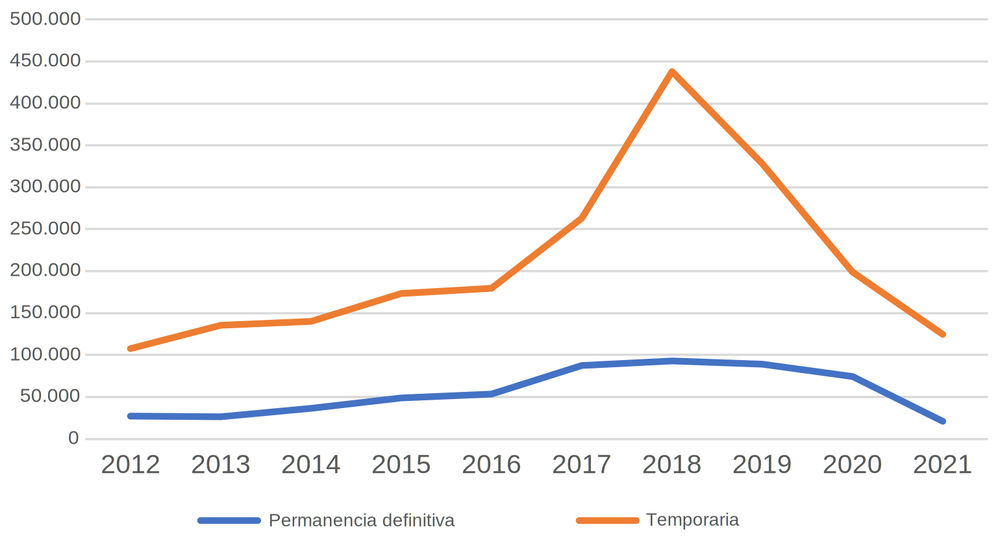

Aceleramos su visa. Y su vida.
Su solicitud de visa o permanencia definitiva se ha demorado demasiado.
La Ley de Bases de los Procedimientos Admnistrativos dice de forma clara que el Servicio Nacional de Migraciones no se puede demorar más de 6 meses en darle su visa. Sin embargo, el SERMIG ha buscado toda clase de excusas para justificar su demora, como la pandemia del COVID-19 y la gran cantidad de migrantes que ha llegado. Esas excusas no sirven.
Hay por lo menos dos cosas que han ocurrido que son enteramente culpa del Servicio Nacional de Migraciones:

Visas y permanencias definitivas otorgadas por el Servicio Nacional de Migraciones. En 2020 y 2021 se redujo muchísimo su número.
Fuente: Servicio Jesuita a Migrantes.
Eso ha significado que los procesos del Servicio se han vuelto menos eficientes. Como se puede apreciar en el gráfico, aún no se vuelve a los niveles de funcionamiento de 2019, a pesar que la cantidad de migrantes solicitando visas es muy superior. Las cifras preliminares para 2022 muestran que, si bien las visas otorgadas han aumentado, aún no se alcanzan los niveles de rendimiento que había en 2019.
A esto se suma que desde el 30 de septiembre de 2021, al terminar el estado de catástrofe por el COVID-19, todos los servicios públicos han regresado al trabajo, salvo, de forma inexplicable, el Servicio Nacional de Migraciones. Asesores jurídicos han hecho sonar la alarma de que durante tres años no hemos tenido Servicio Nacional de Migraciones. Y esto se ha traducido en un menor nivel de servicio comparado con el que había antes de la pandemia.
Por eso, las causas del mal funcionamiento del Servicio Nacional de Migraciones no son ni el COVID-19, ni la gran cantidad de migrantes que ha llegado. Es simplemente la negligencia del propio Servicio, que ha perdido sus papeles y que no es capaz de tramitar los papeles que sí tiene como lo hacía antes.
Tres años de demora no son normales. Dos tampoco. Uno menos. Es hora de reclamar.
¿Qué se hace para solucionar la demora?
Yo interpongo un recurso de protección en contra del Servicio Nacional de Migraciones. Esta es una herramienta que nos da la Constitución chilena para lograr que se dicte una orden judicial que imponga al SERMIG el deber de resolver su solicitud de visa o permanencia definitiva en 60 dís o menos. Si esto no ocurre, se piden sanciones en contra del SERMIG.
Después de interponer el recurso, lo supervisamos para que el SERMIG cumpla con los tiempos de respuesta. Si no cumple, en todas las etapas se pide que el SERMIG cumpla con los plazos, minimizando el tiempo de demora en la tramitación. Esto hace posible que tengamos un tiempo promedio estimado de cinco meses entre que se interpone el recurso y que el cliente recibe la visa o permanencia definitiva en su correo electrónico.
¿Cuáles han sido los resultados?
En más de un 90% de los casos el cliente recibe su permanencia definitiva o su visa en su correo electrónico. Ese es el verdadero resultado.
Disfrute de una nueva oportunidad.
Puede ser que el rechazo de su visa o permanencia definitiva no corresponda.
El Servicio Nacional de Migraciones perdió toda su información en octubre de 2021. Por eso ha debido reconstruir esa base de datos usando los datos de otros organismos, como la Policía de Investigaciones de Chile o el Servicio de Registro Civil e Identificación. Y, como en toda reconstrucción manual, ha habido errores. Es en base a esos errores que el Servicio Nacional de Migraciones ha denegado muchas visas.
A esto se suma que en muchos casos el Servicio Nacional de Migraciones considera sólo la información desactualizada de cuando usted tenía visa temporaria, lo cual, dos o tres años después, no tiene sentido. A modo de ejemplo: es frecuente que los médicos extranjeros, cuando llegan a Chile, trabajen en empleos mal pagados, recibiendo sueldos que no llegan al salario mínimo. Luego, estos médicos revalidan sus títulos y son contratados en clínicas cobrando el salario que les corresponde, pero estas personas, para el SERMIG, no tienen estabilidad económica, por lo que sus permanencias definitivas son rechazadas. Esto no tiene sentido y podemos revertirlo.
Algunos casos clásicos de rechazo son:
- Estadía fuera del país por más de 180 días, cuando usted no ha salido del país siquiera un día.
- Peticiones de documentos no satisfechas. Es lógico que usted no sepa qué documento entregarle al SERMIG cuando el Servicio no le ha dicho con precisión qué necesita. Una simple frase "El documento no era el que se estaba solicitando" no sirve.
- Falta de estabilidad económica, cuando el SERMIG simplemente no ha actualizado sus datos.
- No cumplimiento del plazo de residencia, cuando usted sí cumple con ese plazo y el rechazo se debe en realidad a un error en la reconstrucción de sus datos.
- null, false o espacio en blanco. Lo hemos visto en un par de ocasiones.
¿Qué se hace para solucionarlo?
Presentamos un recurso de protección en contra del Servicio Nacional de Migraciones. Esta es una herramienta que nos da la Constitución chilena para lograr que se dicte una orden judicial que invalide la resolución denegatoria que no corresponde y ordene al Servicio Nacional de Migraciones evaluar nuevamente los antecedentes conforme a Derecho, para que la visa o permanencia definitiva sea otorgada.
¿Cuáles han sido los resultados?
En un porcentaje significativo de los casos el rechazo de la visa es revertido y se ordena al Servicio Nacional de Migraciones que conceda la visa o permanencia definitiva rechazada.
A diferencia del SERMIG, estamos aquí.
Puede que ocurran algunos problemas por el camino.
El Servicio Nacional de Migraciones no tiene ninguna respuesta, pues ha renunciado a atender a los migrantes presencialmente. Por eso la carga de solucionar las dudas migratorias, que por ley le corresponde al SERMIG, ha debido recaer en abogados como yo.
La falta de asesoría oportuna hace que usted pueda cometer errores en su postulación o en la preparación de sus trámites migratorios, con graves consecuencias.
Estamos ahí.
Si usted necesita asesoría, contáctenos mediante nuestras redes sociales o mediante WhatsApp.
Le responderemos y le daremos orientaciones para que siga el mejor curso de acción disponible, para que progrese rápido hacia la permanencia definitiva.